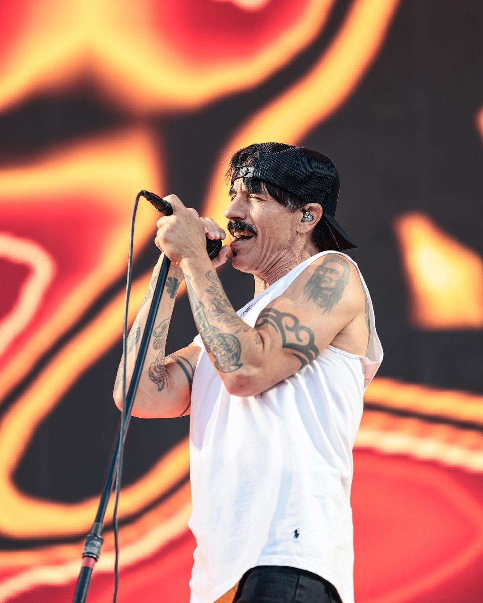
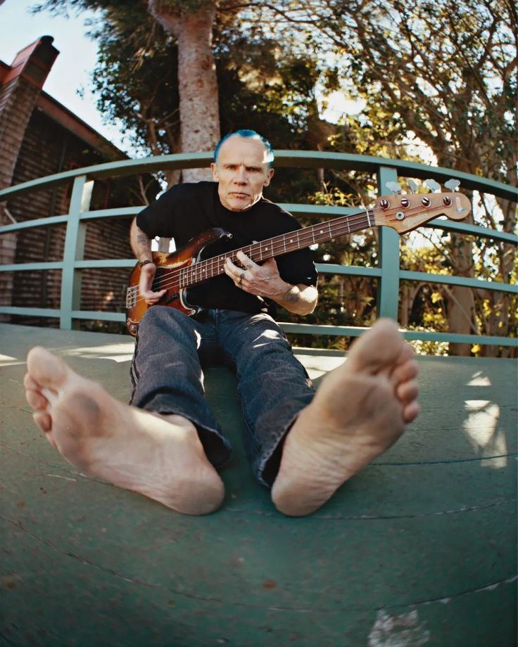
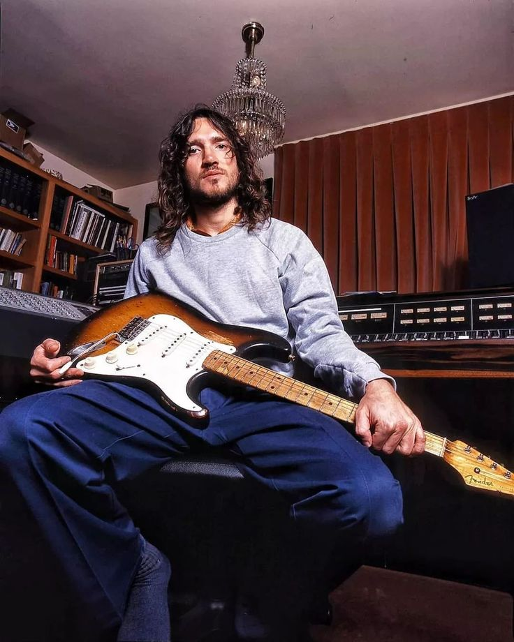
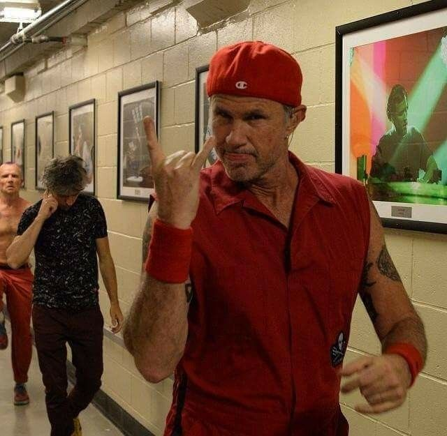
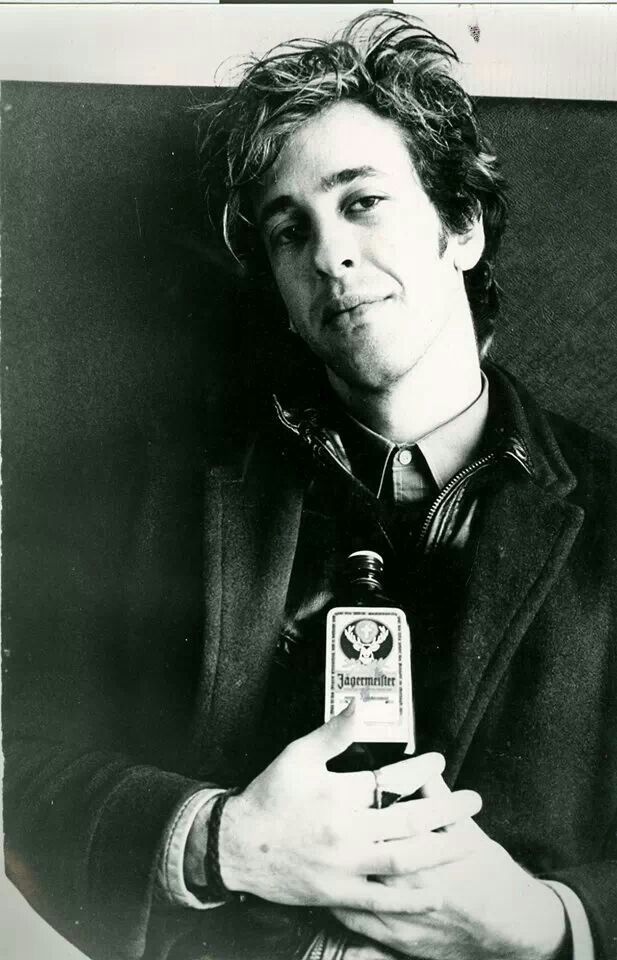
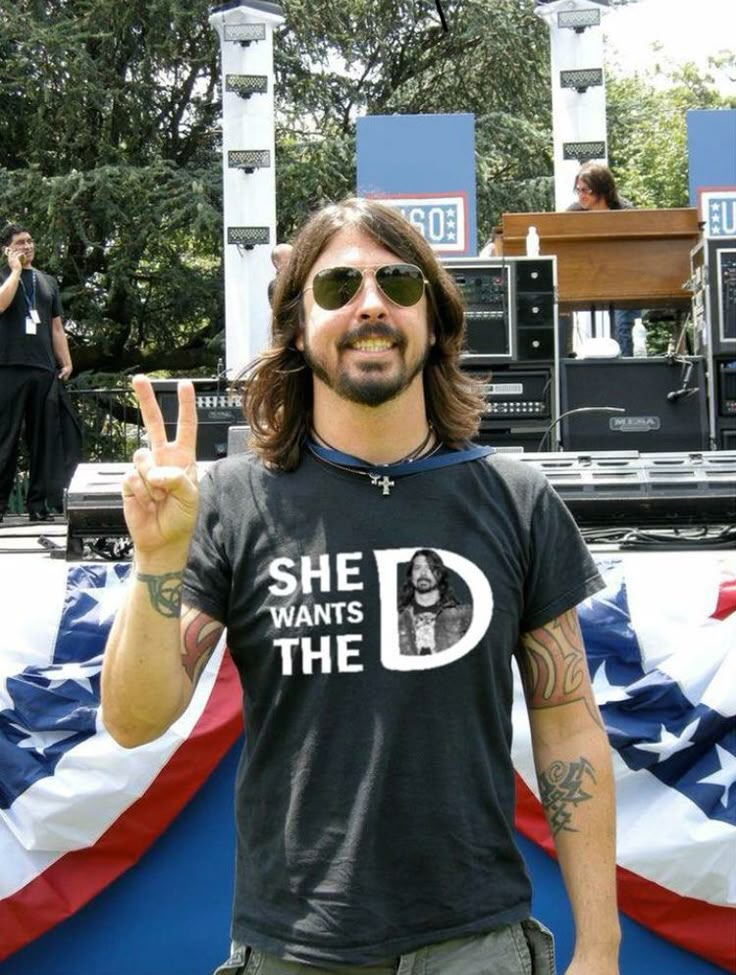
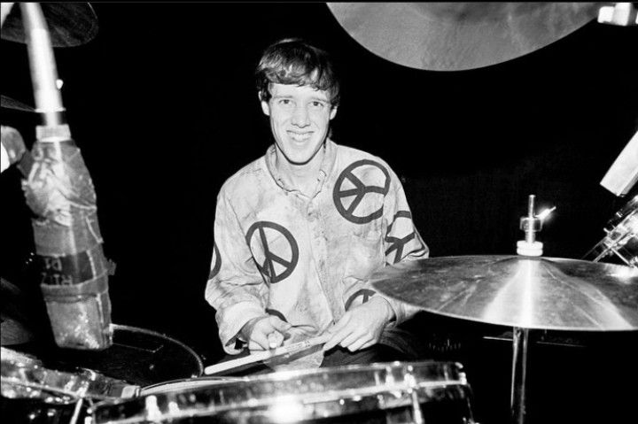

I love Anthony because he is the poetic heartbeat of the band. His journey is one of incredible resilience, and his lyrics—ranging from chaotic energy to deep, vulnerable reflections on life and loss—have a way of speaking directly to the soul. He isn’t just a frontman; he’s a storyteller who taught us how to find beauty in the "city of angels."
I like how imperfect and human he feels. He never sounds artificial.

There is no one like Flea. I love him for his boundless energy and the way he pours every ounce of his spirit into his bass. He’s the "engine" that keeps the band alive. Beyond his talent, his philosophical outlook on life and his absolute authenticity make him a true inspiration. He reminds us to stay curious and always keep the "funk" in our hearts.
His bass lines are impossible not to recognize.

To me, John is pure magic. I love him because his guitar doesn't just play notes—it cries, laughs, and breathes. His return to the band felt like a missing piece of a puzzle finally clicking into place. His backing vocals and ethereal solos have a celestial quality that transcends music; he truly captures the "invisible" side of art and inspires me.
A huge part of why albums like Californication and By The Way feel so special.

Chad is the ultimate powerhouse. I love him for being the "big brother" of the group and the literal thunder behind the kit. He brings such a grounded, solid energy to every track. Seeing him play is a masterclass in passion and strength—he’s the rock that holds the funk together.
RHCP would not feel the same without his drumming.

We can never forget Hillel. I love him for being the original architect of the RHCP sound. His "slim, funky" style laid the foundation for everything the band became. Even though he left us far too soon, his spirit is still felt in every riff and every show. He is the eternal soul of the Peppers.
Even today you can still feel his influence on RHCP.

Dave brought a darker and heavier atmosphere to the band. One Hot Minute sounds very different from other RHCP albums, but that is exactly why it feels interesting.

One of the original drummers of RHCP. His style helped build the early funk-punk energy of the band.
He was an important part of RHCP before the classic lineup formed.